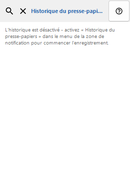
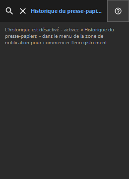

Historique du presse-papiers
À quoi cela sert
L'historique est stocké uniquement en local et chiffré avec Windows DPAPI pour votre compte.


Ordre des actions
Lisez les explications numérotées, choisissez les valeurs voulues, puis continuez avec la commande de la fenêtre.